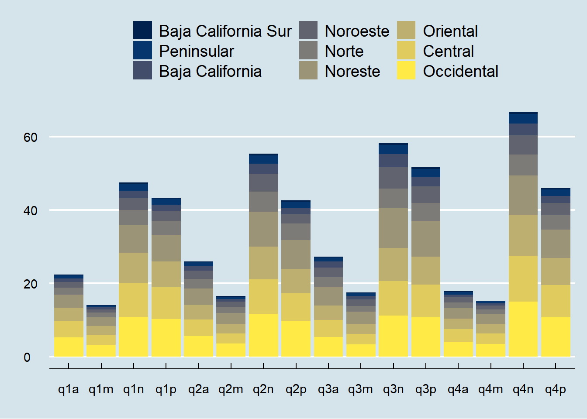
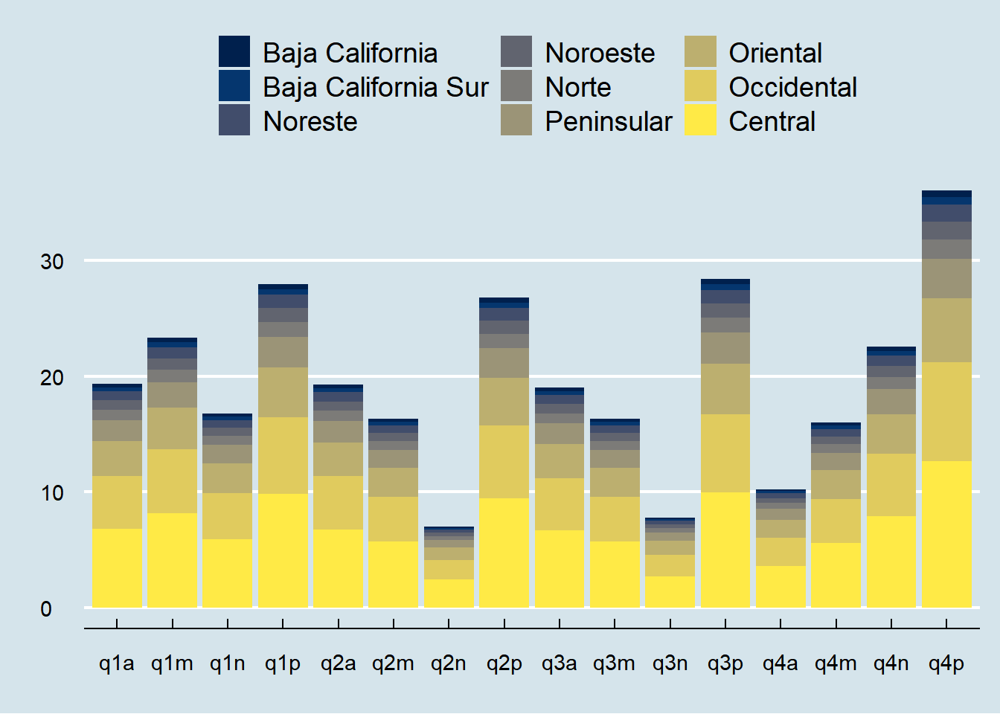

Current Structure of the Mexican Energy System
Introduction
We divide the Mexican energy system into three main sectors; power, transport, and high-temperature heating.1.
Figure 1 contains the exogenous energy demand across sectors we use for the optimization. We use data from the national power development program to project the demand forward. The sector with the highest energy demand is high temperature (industrial) heating, closely followed by power generation. At the start of the optimization period (2020), high-temperature heating consumes 40% of total energy demand, the electric sector 38%, and passenger transportation 21%. Figure 2 shows the map of the national center for energy control (CENACE) power system regions. There are nine regions; Baja California, Baja California Sur, Noroeste, Norte, Noreste, Occidental, Central, Oriental, and Peninsula. Figure 3 portrays the exogenous energy demand for the power sector between 2020 and 2050 across these regions. While in 2020, there was an aggregate demand of 567 PJ, by 2050, the market will grow by 50% to more than 1,100 PJ. Regarding the distribution of power demand across all regions. The peninsular region uses the least amount of electricity with only 4% of total resources, while the industrious Western, Central, and Northeast areas demand 22%, 18%, and 17% of power supply, respectively.
Show the Code
# Change the working directory
plot = data |> group_by(year, sector) |>
summarise(demand = sum(value, na.rm = T)) |>
dplyr::filter(sector != "heatLow", year > 2015) |> group_by(year) |>
mutate(share = demand/sum(demand))
# Plot the power demand
ggplot(plot) +
geom_line(aes(x = year, y = demand, group = sector, color = sector)) +
geom_point(aes(x = year, y = demand, group = sector, color = sector)) +
theme_economist() Show the Code
# Change the working directory
file = gsub("WebSite-MeritOrder", "", getwd())
# Load the shapefile of states
st = st_read(paste0(file, "/00_RawData/99_other/01_shp/01_mx/gadm40_MEX_1.shp"), quiet = T)
reg = read_delim(paste0(file, "/00_RawData/99_other/99_other/MxRegions.csv"),
delim = ";", escape_double = F, trim_ws = T)
# Change the state names to merge with the region codes
st = mutate(st, NAME_1 = janitor::make_clean_names(NAME_1)) |>
mutate(NAME_1 = gsub("_", " ", NAME_1)) |> mutate(NAME_1 = str_to_title(NAME_1))
# Change the working directory
plot = left_join(st, reg, by = c("NAME_1" = "state"))
# Plot the power demand
tmap_style("classic"); tm_graticules(labels.inside.frame = T, labels.show = F) +
tm_shape(plot) + tm_fill(col = "region", title = "") +
tm_compass(type = "rose", position = c("left", "top"), size = 2) +
tm_scale_bar(width = 0.2, position = c("left", "bottom"), text.size = 1)Show the Code
# Change the working directory
plot = data |> dplyr::filter(sector == "power") |>
mutate(region = gsub("Baja California Sur", "Baja California", region)) |>
group_by(year, region) |>
summarise(demand = sum(value, na.rm = T)) |>
dplyr::filter( year > 2015) |> arrange(year, -demand) |>
mutate(region = fct_reorder(factor(region), demand, .desc = F)) |>
group_by(year) |>
mutate(share = paste0("(", as.character(scales::comma(round(demand/sum(demand)*100, 0))), "%", ")")) |>
mutate(region = paste(region, share)) |> group_by(year) |> mutate(agg = sum(demand))
head(plot)# A tibble: 6 × 5
# Groups: year [1]
year region demand share agg
<dbl> <chr> <dbl> <chr> <dbl>
1 2020 Occidental (22%) 124. (22%) 568.
2 2020 Central (18%) 103. (18%) 568.
3 2020 Noreste (17%) 98.2 (17%) 568.
4 2020 Oriental (16%) 91.0 (16%) 568.
5 2020 Norte (9%) 52.2 (9%) 568.
6 2020 Noroeste (8%) 45.4 (8%) 568.Show the Code
# Plot the power demand
ggplot(plot) +
geom_bar(aes(x = year, y = demand, fill = reorder(region, demand)), alpha = 0.95, stat = "identity") +
theme_economist() %+replace% theme(legend.title = element_blank()) +
labs(x = "", y = "") + scale_fill_viridis(discrete = T, option = "E") +
guides(fill = guide_legend(nrow = 3)) +
coord_cartesian(xlim = c(2020, 2055), clip = "off")Show the Code
# Change the working directory
plot = data |> dplyr::filter(sector == "mobilityPassenger") |>
group_by(year, region) |>
summarise(demand = sum(value, na.rm = T)) |>
dplyr::filter( year > 2015) |>
mutate(region = fct_reorder(factor(region), demand, .desc = F))
# Plot the power demand
ggplot(plot) +
geom_bar(aes(x = year, y = demand, fill = region), alpha = 0.95, stat = "identity") +
theme_economist() %+replace% theme(legend.title = element_blank()) +
labs(x = "", y = "") + scale_fill_viridis(discrete = T, option = "E") +
guides(fill = guide_legend(nrow = 3))Show the Code
# Change the working directory
plot = data |> dplyr::filter(sector == "heatHigh") |>
group_by(year, region) |>
summarise(demand = sum(value, na.rm = T)) |>
dplyr::filter( year > 2015) |>
mutate(region = fct_reorder(factor(region), demand, .desc = F))
# Plot the power demand
ggplot(plot) +
geom_bar(aes(x = year, y = demand, fill = region), alpha = 0.95, stat = "identity") +
theme_economist() %+replace% theme(legend.title = element_blank()) +
labs(x = "", y = "") + scale_fill_viridis(discrete = T, option = "E") +
guides(fill = guide_legend(nrow = 3))Show the Code
# Change the working directory
plot = data |> dplyr::filter(sector == "power", year == 2020) |>
group_by(TimeStep, region) |>
summarise(demand = sum(value, na.rm = T)) |>
mutate(region = fct_reorder(factor(region), demand, .desc = F))
# Plot the power demand
ggplot(plot) +
geom_bar(aes(x = TimeStep, y = demand, fill = region), stat = "identity") +
theme_economist() %+replace% theme(legend.title = element_blank()) +
labs(x = "", y = "") + scale_fill_viridis(discrete = T, option = "E") +
guides(fill = guide_legend(nrow = 3))
Show the Code
# Change the working directory
plot = data |> dplyr::filter(sector == "mobilityPassenger", year == 2020) |>
group_by(TimeStep, region) |>
summarise(demand = sum(value, na.rm = T)) |>
mutate(region = fct_reorder(factor(region), demand, .desc = F))
# Plot the power demand
ggplot(plot) +
geom_bar(aes(x = TimeStep, y = demand, fill = region), stat = "identity") +
theme_economist() %+replace% theme(legend.title = element_blank()) +
labs(x = "", y = "") + scale_fill_viridis(discrete = T, option = "E") +
guides(fill = guide_legend(nrow = 3))
Show the Code
# Change the working directory
plot = data |> dplyr::filter(sector == "heatHigh", year == 2020) |>
group_by(TimeStep, region) |>
summarise(demand = sum(value, na.rm = T)) |>
mutate(region = fct_reorder(factor(region), demand, .desc = F))
# Plot the power demand
ggplot(plot) +
geom_bar(aes(x = TimeStep, y = demand, fill = region), stat = "identity") +
theme_economist() %+replace% theme(legend.title = element_blank()) +
labs(x = "", y = "") + scale_fill_viridis(discrete = T, option = "E") +
guides(fill = guide_legend(nrow = 3))Footnotes
We do not include low-temperature (or residential) heating because the share of energy demand for heating in Mexico is marginal and the energy demand for cooling is connected to the power-sector demand for electricity↩︎